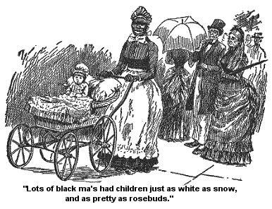
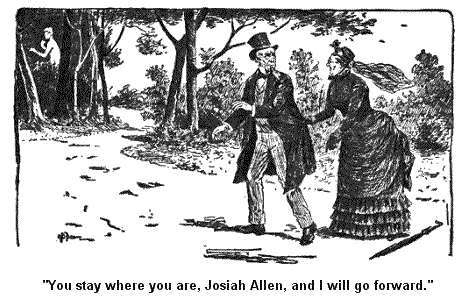
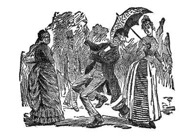

SARATOGA BY DAYLIGHT.
Wall, the next mornin' Josiah and me sallied out middlin' early to explore still further the beauties and grandness of Saratoga. I had on a black straw bonnet, a green vail, and a umbrell. I also have my black alpacky, that good moral dress.
My dress bein' such a high mission one choked me. It wuz so high in the neck it held my chin up in a most uncomfortable position, but sort a grand and lofty lookin'. My sleeves wuz so long that more'n half the time my hand wuz covered up by 'em and I wuz too honerable to wear 'em for mits; no, in the name of principle I wore 'em for sleeves, good long sleeves, a pattern to other grandmas that I might meet.
I felt that when they see me and see what I wuz a doin' and endurin' fur the cause of female dressin' they would pause in their wild career, and cover up their necks and pull their sleeves down.
Wall, it haint to be expected that I could walk along carryin' such hefty emotions as I wuz a carryin', and havin' my neck held high and stiddy both by principle and alpacky, and see to every step I wuz a takin'. And, first I knew, right while I was enjoyin' the loftiest of these emotions, I ketched my foot in sunthin', and most fell down. Instinctively (such is the power of love) I put out my hand and clutched at the arm of my pardner. But he too wuz nearly fallin' at the same time. It wuz a narrow chance that we wuz a runnin' from having our prostrate forms a layin' there outstretched on the highway.
Instinctively I sez, "Good land!" and Josiah sez -- wall, it is fur from me to tell what he said, but it ended up with these words, "Dumb them dumb sidewalks anyway;" and sez he, "I should think it would pay to have a little less gilt paint and spangles and orniments overhead and a few more solid bricks unless they want more funerals here, dumb 'em!"
Sez I,"Be calm! who be you a talkin' about? who do you want to bring down your fearful curses on, Josiah Allen?"
"Why, onto the dumb bricks," sez he.
He wuz agitated and I said no more. But four times in that first walk, did I descend almost precipitously into declivities amongst the bricks, risin' simultaneously on similar elevations.
It wuz a fearful ordeel and I felt it so, but upheld by principle and Josiah, I moved onwards, through what seemed to be 5 great throngs and masses of people, 3 on the ground and 2 hinted up above us on tall pillows.
Them immense places overhead long as the streets, wuz kinder scalloped out and trimmed off handsum with railin's, etc. And on it -- oh! what a vast congregation of heads of all sorts and sizes and colors. And oh! what a immense display of parasols; why no parasol store in the land could begin with what I see there.
I can truly say that I thought I knew somethin' about parasols;, havin' owned 3 different ones in the course of my life, and havin' one covered over. I thought I knew somethin' of their nater and habits, which is a good deal, so I had always s'posed, like a umbrell's. But good land! I gin up that I knew them not, nor never had.
Why anybody could learn more on 'em through one jerney down that street, than from a hull lifetime in Jonesville. Truly travel is very upliftin' and openin' and spreadin' out to the mind, both in parasols and human nater.
Wall, them 2 masses over our heads wuz 2, then the one in which we wuz a strugglin' and the one opposite to it made 4. For anybody with any pretence to learnin' knows that twice 2 is 4. And then in the middle of the broad street was a bigger mass of chariots and horsemen, and carts and carriages, and great buggies and little ones, and big loads of barrels, and big loads of ladies, and then a load of wood, and then a load of hay, and then a pair of young folks pretty as a picture. And then came some high big coaches as big as our spare bedroom, and as high as the roof on our horse barn, with six horses hitched to e'm, all runnin' over on top with men; and wimmen, and children, and parasols, and giggles, and ha ha's. And a man wuz up behind a soundin' out on a trumpet, a dretful sort of a high, sweet note, not dwindlin' down to the end as some music duz, but kinder crinklin' round and endin' up in the air every time.
Josiah wuz dretful took with it and he told me in confidence that he laid out when he got home to buy a trumpet and blow out jest them strains every time he went into Jonesville or out of it. He said it would sound so sort a warlike and impressive.
I expostulated aginst the idee. But sez he, "You'll enjoy it when you get used to it."
"Never!" sez I.
"Yes you will," sez he, "and while I live I lay out that you shall have advantages, and shall enjoy things new and uneek."
"Yes," sez I feelin'ly, "I expect to, Josiah Allen, as long as I live with you." And I sithed. But I had little time to enjoy even sithin', for oh! the crowd that wuz a pressin' onto us and surroundin' us on every side, some on 'em curius and strange lookin', some on 'em beautiful and grand. Pretty young girls lookin' sweet enough to kiss, and right behind 'em a Chinese man with a long dress, and wooden shoes, and his hair in a long braid behind, and his eyes sot in sideways. And then would come on a hull lot of wimmen in dresses ev'ry color of the rainbow, and some men. Then a few childern, lookin' sweet as roses, with their mothers a pushin' the little carts ahead on 'em. And if you'll believe it, I don't s'pose you will, but it is true, that lots of black ma's had childern jest as white as snow, and pretty as rosebuds, took after their fathers I s'pose. But I don't believe in a mixin' of the races. And when I see 'em a kissin' the pretty babys, I begun to muse a very little on the feelin's of the indignent South, at havin' a colered girl set in the same car with 'em, or on a bench in the same school room.

I mewsed on how they held the white forms clost to their black breasts at birth, and in the hour of death -- the black lips pressed to the white cheeks and lips, in both cases. And all the way between life and death they mingle clost as they can, some in some cases like the hill of knowledge. Then the contact is too clost, when they sot out to climb up by 'em. Truly there are deep conundrums and strange ones, all along through life; though the white man may be, and is, cleer up out of his way, on the sunshiny brow of the hill, and the black man at the foot, way down amongst the shadows and darkness of the low grounds. They don't come very nigh each other. But the arms that have felt the clasp and the lips that have felt the kisses of that very same black climber all through life, moves 'em and shouts 'em to "go down," to "go back,"
"The contact is getting too clost, danger is ahead." Curious, haint it? Jest as if any danger is so dangerous as ignorance and brutality. Curious, haint it? But I am a eppisodin', and to resoom.
Wall, right after the babies we'd meet a Catholic priest with a calm and fur away look on his face, a lookin' at the crowd as if he wuz in it, but not of it. And then a burgler, mebby, anyway a mean lookin' creeter, ragged and humble. And then 2 or 3 men foreign lookin', jabberin' in a tongue I know nothin' of, nor Josiah either. And then some more childern, and wimmen, and dogs, and parasols, and men, and babies, and Injuns, and Frenchmen, and old young wimmen, and young old ones, and handsome ones, and hombly ones, and parasols, and some sweet young girls ag'in, and some black men, and some white men, and some more wimmen, and parasols, and silk, and velvet, and lace, and puckers, and raffles, and gethers, and gores, and flowers, and feathers, and fringes, and frizzles, and then some men, some Southerners from the South, some Westerners from the West, some Easterners from the East, and some Cubebs from Cuba, and some Chinamen from China.
Oh! what a seen! What a seen! back and forth, passin' and repassin', to and fro, parasols, and dogs, and wimmen, and men, and babies, and parasols, to and fro, to and fro. Why, if I stood there long so crazed would I have become at the seen, that I should have felt that Josiah wuz a To and I wuz a Fro, or I wuz a parasol and he wuz a dog.
And to prevent that fearful catastrophe, I sez, "If we ever get beyond this side of the village that seems all run together, if we ever do get beyond it, which seems doubtful, le's go and sit down, in some quiet spot, and try to collect our scattered minds." Sez I, "I feel curius, Josiah Allen!" and sez I, "How do you feel?"
His answer I will not translate; it was neither Biblical nor even moral. And I sez agin, "Hain't it strange that they have the village all run together with no streets turnin' off of it." Sez I, "It makes me feel queer, Josiah Allen, and I am a goin' to enquire into it." So we wended our way some further on amongst the dense crowd I have spoken of, only more crowded and more denser, and anon, if not oftener, Josiah's head would be scooped in by passin' parasols, and then in low, deep tones, Josiah would use words that I wouldn't repeat for a dollar bill, till at last I asked a by bystander a standin' by, and sez I, "Is this village all built together -- don't you have no streets a turnin' off of it?"
"Yes," sez he, "you'll find a street jest as soon as you get by this hotel."
I stopped right in my tracts; I wuz dumbfoundered. Sez I, "Do you mean to say that this hull side of the street that we have been a traversin' anon, or long before anon, -- do you say that this is all one buildin'?"
"Yes mom," sez he.
Sez I, in faint axents, "When shall we get to the end on it?"
Sez he, "You have come jest about half way."
Josiah gin a deep groan and turned him round in his tracts and sez, "Le's go back this minute."
I too thought of the quiet haven from whence we had set out, with a deep longin', but sech is the force and strength of my mind that I grasped holt of the situation and held it there tight. If we wuz half way across it wouldn't be no further to go on than it would to go back. Such wuz my intellect that I see it to once, but Josiah's mind couldn't grasp it, and with words murmured in my ears which I will never repeat to a livin' soul he wended on by my side through the same old crowd -- parasols, and wimmen, and dogs, and babies, and men, and parasols, and Injuns, and Spanards, and Creoles, and pretty girls, and old wimmen, and puckers, and gethers, and bracelets, and diamonds, and lace, and parasols. Several times, if not more, wuz Josiah Allen scooped in by a parasol held by a female, and I felt he wuz liable to be torn from me. His weight is but small. 3 times his hat fell off in the operation and wuz reskued with difficulty, and he spoke words I blush to recall as havin' passed my pardner's lips.
Wall, in the fullness of time, or a little after, for truly I wuz not in a condition to sense things much, we arrove at a street and we gladly turned our 2 frames into it, and wended our way on it, goin' at a pretty good jog. The crowd a growin' less and less and we kep a goin', and kep a goin', till Josiah sez in weary axents:
"Where be you a goin', Samantha? Haint you never goin' to stop? I am fairly tuckered out."
And I sez in faint axents, "I would fain reach a land where parasols and puckers are not and dogs and diamonds are no more."
I wuz middlin' incoherent from my agitation. But I meant well. I wuz truly in hopes I would reach some quiet place where Josiah and me could set down alone. Where I could look in quiet and repose upon that dear bald head, and recooperate my strength.
We went by beautiful places, grand houses of different colors but every one on 'em good lookin' ones, a settin' back amongst their green trees, with shady grass-covered yards, and fountains and flower beds in front of 'em, and more grand handsome houses, and more big beautiful yards, green velvet grass and beautiful flowers and fountains, and birds and beauty on every side on us.
And though I felt and knew that in them big carriages that was a passin' 2 and fro all the time, though I felt that parasols, and puckers, and laces, and dogs, and diamonds, wuz a bein' borne past me all the time, yet sech is the force of my mind that I could withdraw my specks from 'em, and look at the beautiful works of nater (assisted by man) that wuz about me on every hand.
Finally my long search wuz rewarded, we came to a big open gateway that seemed to lead into a large, quiet delightful forest. And in that lovely, lonesome place, Josiah and me sot down to recooperate our 2 energies.
Josiah looked good to me. Men are nice creeters, but you don't want to see too meny of 'em to once, likeways with wimmen. Josiah looked to me at that moment some like a calico dress that you have picked out of a dense quantity of patterns of calico at a store, it looks better to you when you get it away from the rest. Josiah Allen looked good to me.
But anon, after I had bathed my distracted eyes (as you may say) in the liniment of my pardner, I began to take in the rare beauty of the seen laid out before me and we arose and wended our way onwards peaceful and serene, as 2 childern led on by their mother.
Dear Mother Nature! how dost thou rest and soothe thy distracted childern when too hardly used by the grindin', oppressive hands of fashion,and the weerisome elements of a too civilized life. Maybe thou art a heathen mother, oneducated and ignorant in all but the wisdom of love, but thy bosom is soft and restful, and thy arms lovin' and tender. And, heathen if thou art, we love thee first and at last. We are glad to slip out of all the vain and gilded supports that have held us weerily up, and lay down our tired heads on thy kindly and unquestionin' bosom and rest.
As we rose from the soft turf, on which we had been a restin', and meandered on through that beautiful park, (so tenderly had nature used him,) not one trace of the wild commotion that had almost rent Josiah Allen's breast, could be seen save one expirin' threeoh of agony. As we started out ag'in, he looked down onto my faithful umberell, that had stiddied me on so many towers of principle, and sez he, in low concentrated axents of skern and bitterness, "If that wuz a dumb parasol, Samantha, I would crush it to the earth and grind it to atoms."
Truly he could not forget how his bald head had been gethered in like a ripe sheaf, by 7 females, during that very walk, hombly ones too, so it had happened. But I sez nothin' in reply to this expirin' note of the crysis he had passed through, knowin' this was not the time for silver speech but for golden silence, and so we meandered onwards.
And it wuz anon that we see in the distance a fair white female a standin' kinder still in the edge of the woods, and Josiah spoke in a seemin'ly careless way, and sez he, "She don't seem to have many clothes on, Samantha."
Sez I, "Hush, Josiah! she has probably overslept herself, and come out in a hurry, mebby to look for some herbs or sunthin'. I persoom one of her childern are sick, and she sprung right up out of bed, and come out to get some weather-wort, or catnip, or sunthin'."
And as I spoke I drawed Josiah down a side path away from her. But he stopped stun still and sez he, "Mebby I ought to go and help her Samantha."
Sez I, "Josiah Allen, sense I lived with you, I don't think I have been shamder of you;" sez I, "it would mortify her to death if she should mistrust you had seen her in that condition."
"Wall," sez he, still a hangin' back, "if the child is very sick, and I can be any help to her, it is my duty to go."
His eye had been on her nearly every moment of the time, in spite of my almost voyalent protests, and sez he, kinder excited like, "She is standin' stun still, as if she is skarit; mebby there is a snake in front of her or sunthin', or mebby she is took paralysed, I'd better go and see."
Sez I, in low, deep axents, "You stay where you be, Josiah Allen, and I will go forward, bein' 2 females together, it is what it is right to do and if we need your help I will holler."

And finally he consented after a parlay.
Wall, as I got up to her I see she wuzn't a live, meat woman, but a statute and so I hastened back to my Josiah and told him there wuzn't no need of his help and he wuz in the right on't -- she wuz stun still."
He said he guessed we'd better go that way. And I sez, "No, Josiah, I want to go round by the other road."
Wall, we got back to our abode perfectly tuckered out, but perfectly happy. And we concluded that after dinner we would set out and see the different springs and partake of 'em. Had it not been for our almost frenzied haste to get away from parasols and dogs and destraction into a place of rest we should have beheld them sooner. And our afternoon's adventures I will relate in another epistol.
